2-IncubatorViz
This tutorial will walk you through the creation of a visualization for the incubator (a digital model). We will have the following steps:
- New project and add a cube
- Camera and lighting fixes
- Adding a script to move the camera
- Adding the incubator box
- Add the other incubator components
This tutorial is based on the existing incubator visualization created by Lisa Maria Huynh.
a. New project and add a cube
- 1. Start a new project, named 'incubator'. If you're in a project already, go to 'Project' then select 'Quit to Project List'.
- 2. On the left, click '3D scene'.
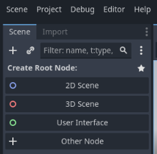
- 3. Save the scene with Ctrl-S or 'Scene' then 'Save Scene'
- 4. Save this scene as 'incubator.tscn'
- 5. Right-click on the 'Node3D' node at the top left. Rename it to 'incubator_root'.
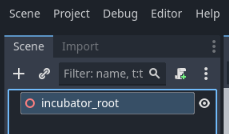
- 6. Right-click on 'incubator_root' and select 'Add Child Node'
- 7. Search for 'mesh' and create a 'MeshInstance3D' node
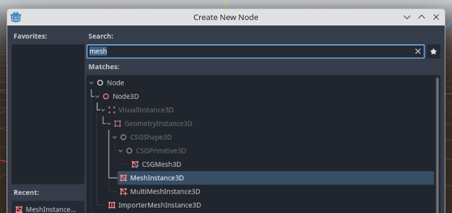
- 8. With the 'MeshInstance3D' node selected on the left, look at the 'Inspector' panel on the right
- 9. Find the 'Mesh' property for the 'MeshInstance3D' node. Click the arrow to the right, then select 'New BoxMesh'
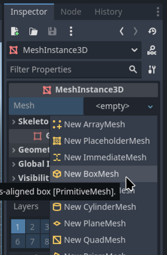
- 10. Right-click on the 'incubator_root' node on the left again and select 'Add Child Node'
- 11. This time, add a 'Camera3D'
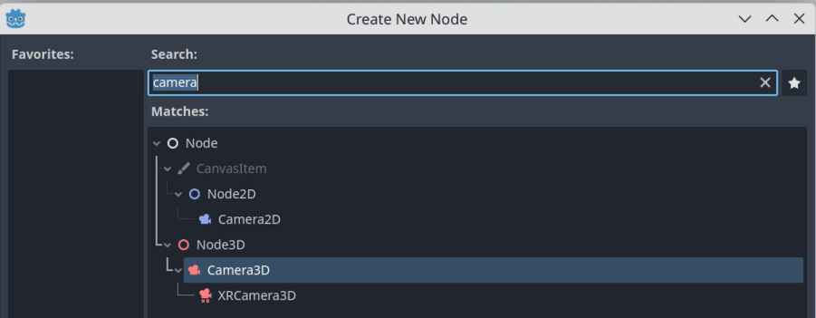
- 12. Make sure the 'Camera3D' node is selected on the left.
- 13. Then, click on the blue arrow in the middle of the screen (on the 'gizmo'), and drag to the left. Then, click on the green arrow and drag up. This will move the camera. The figure below is after the camera has been moved

- 14. Click the 'triangle' play button in the top-right to see the viz. If it asks you to select a scene, select 'incubator.tscn'.
It should be a gray square, which is a good start!
b. Camera and lighting fixes
- 15. Go back to the editor. Make sure the 'Camera3D' node is selected on the left.
- 16. Look for the 'Node3D' section in the 'Inspector' on the right. Click the 'Transform' property to reveal the XYZ coordinates of the camera.
- 17. Try different values of position and rotation to get a better look at the cube. Here x=0, y=1, z=3. Remember that in Godot, y is up, so higher values of y means the camera rises vertically.
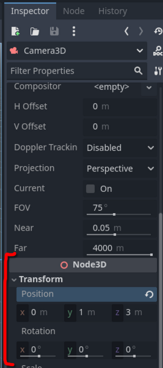
- 18. We need some light in the scene to see the cube. Godot has a 'preview sun' and 'preview environment' for use in the editor. We have to add these to the scene to have them in the running viz (when we hit play).
- 19. Look at the top of the scene, and make sure that both the preview sun and preview environment buttons are on (they should be blue).
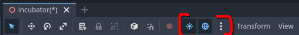
- 20. Click the three dots to the right of the sun and globe icons (highlighted in the figure above).
- 21. Feel free to play around with the preview sun and environment colours. Then click 'Add Sun to Scene' and 'Add Environment to Scene'. Now, when we hit the play button, it should look like it does in the editor.
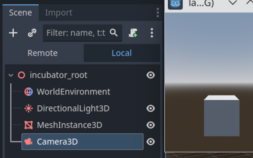
c. Adding a script to move the camera
- 22. We want to be able to move the camera around when running the viz.
- 23. Find the camera.gd script in the 'scripts' folder (in the IncubatorDTCourse repository).
Copy it to your project directory.
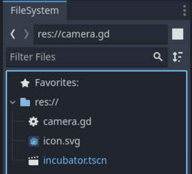
- 24. Right-click on the 'Camera3D' node in your scene tree on the left. Click 'Attach Script'.
- 25. Click the folder icon to the right of the 'path'. Select the 'camera.gd' script and then hit 'load'.
- 26. You will be taken to the 'Script' tab, and will be looking at the script.
- 27. Don't worry about the code. What it does is it takes input, and moves/rotates the camera around.
- 28. Try running the viz now. You should be able to fly around with the W, A, S, and D keys. If you hold the right mouse button and move the mouse, you should be able to look around.
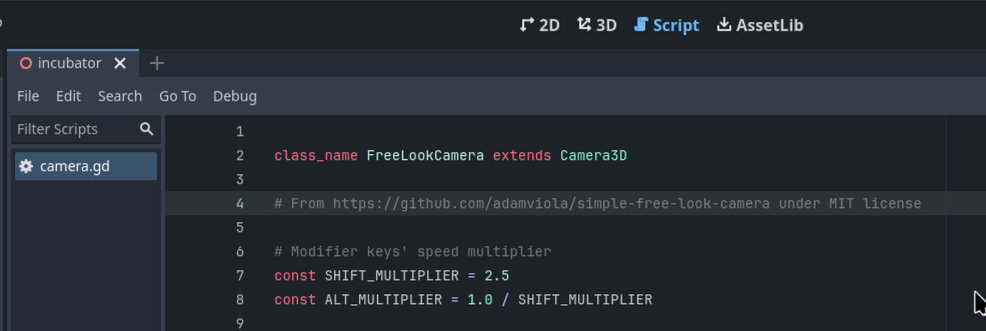
d. Adding the incubator box
- 29. Let's replace the cube with the incubator itself. Click on the '3D' tab at the top of the editor to make sure you're in the 3D view.
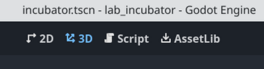
- 30. Find the 'box.glb' file in the 'models' directory (next to this html file). Copy it into your project folder.
- 31. When you switch back to Godot, it should import the file and add it to the filesystem in the bottom left.
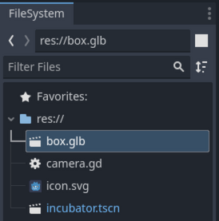
- 32. Simply click-and-drag the 'box.glb' file from this filesystem pane to the main window. Place it over the cube.
- 33. Now delete the cube.
- 34. Great! We have the incubator model in Godot now.
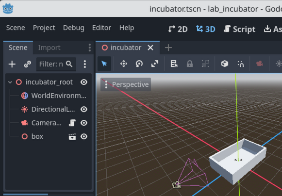
- 35. As a note, the scale of the incubator and the other components is not one-to-one with reality. The mesh is defined as around 2 metres by 3 metres (both Blender and Godot use metres by default). This unrealistic scale is fine as long as everything is the same scale. But if you start mixing models, this might be not what you want.
- 36. If in the future you want to fix this, double-click on the 'box.glb' file in the lower-left filesystem pane. A window will open up where you can set the 'root scale'. Higher numbers will make it bigger when you click 'reimport'.
e. Adding the other components
- 37. Follow the steps above from part d with the 'lid.glb', 'fan.glb', and 'tempeh.glb'. As a technical note, these files were extracted from the incubator .obj file using Blender.
- 38. Position and rotate the objects inside the incubator box.
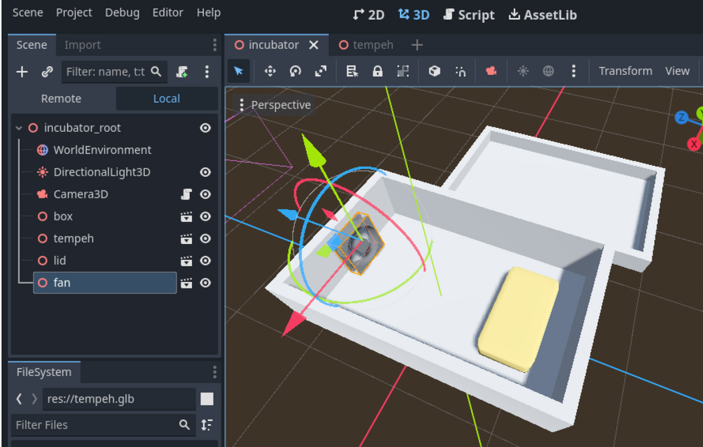
- 38. Add a 'MeshInstance3d' node to the incubator (in the scene tree to the left). Rename the node to 'heater'. In the inspector (to the right), under the 'Mesh' property, add a 'New BoxMesh' by clicking on the arrow to the right.
- 39. Change the 'transform' property of this 'MeshInstance3D' to be Position: x=0, y=0.2, z=0.2 Scale: x=0.8, y=0.1, z=0.8. You may need to click the chain to the right of the scale to allow scaling in different dimensions (located in the very bottom-right of the screenshot below).
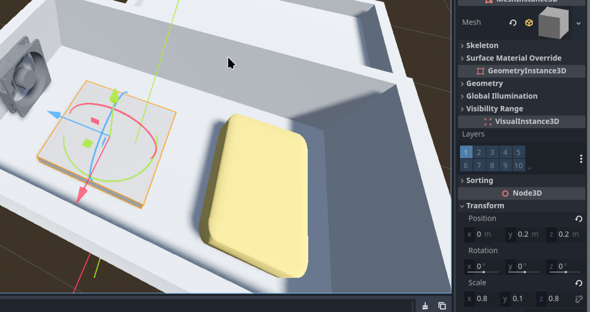
- 40. Make sure the heater node is selected. At the top of the inspector, click on the 'Surface Material Override' category, then next to the '0', click the arrow, and then 'New StandardMaterial3D'.
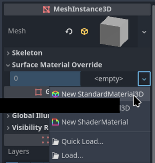
- 41. There should now be a white orb in that spot. This is the preview of the material of the mesh.
- 42. Click on the orb (gray in the figure below). We can then set the physically-based rendering (PBR) properties of the material. In the example below, the albedo (the base colour) is set to gray. Feel free to play around with these properties.
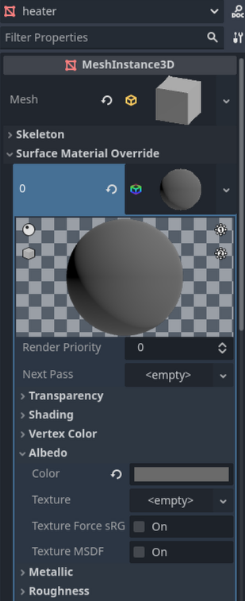
f. Conclusion
Below is one version of this project. Don't worry if yours isn't exactly the same.
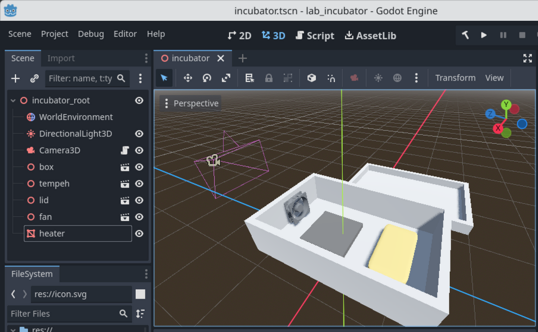
That was a lot of work, but we have a very nice Digital Model of the incubator. In the next section, we'll turn this into a Digital Shadow of the incubator.